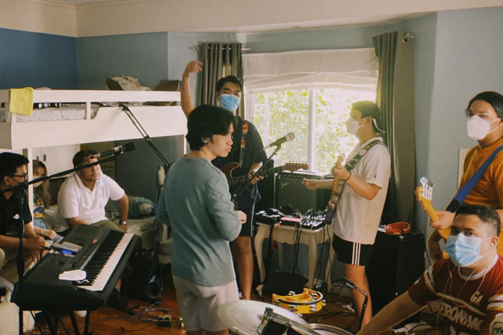
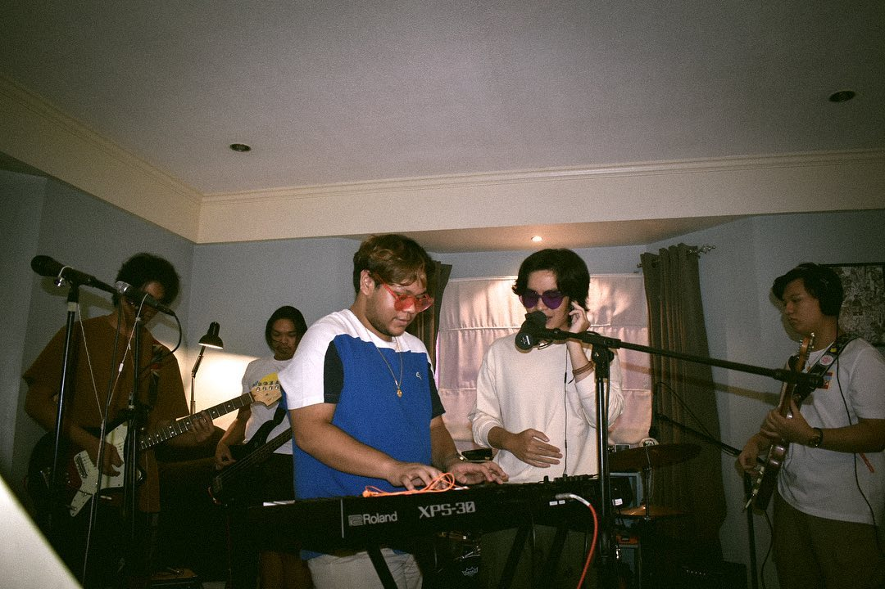
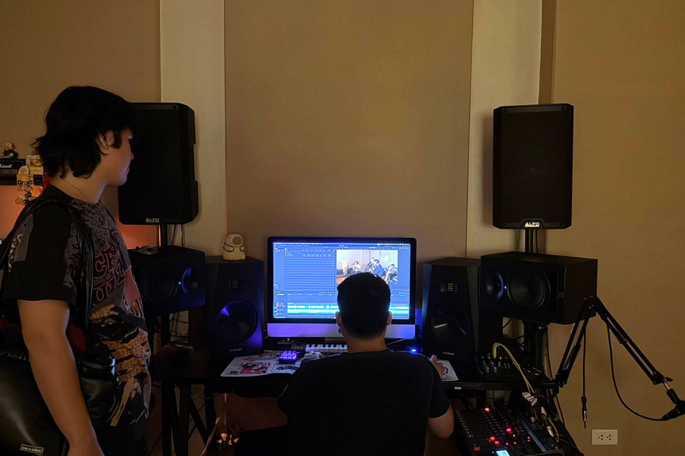
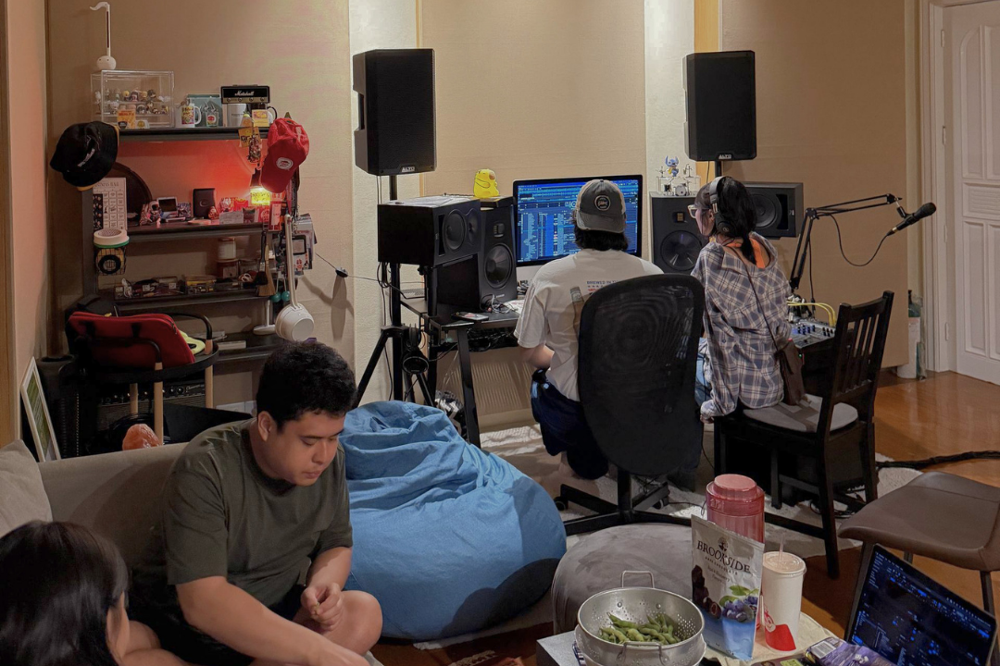
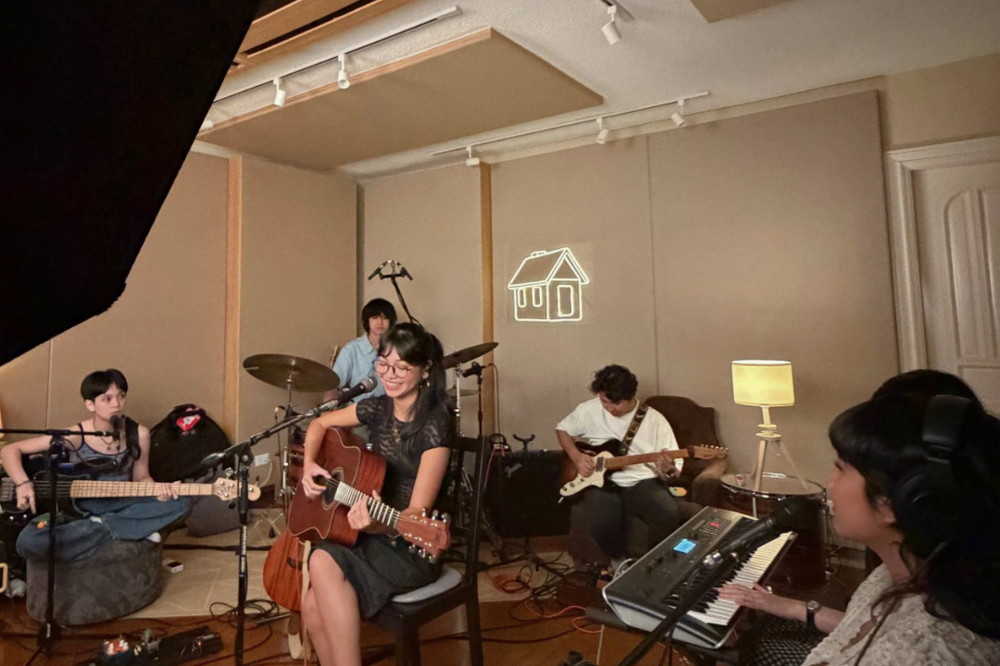
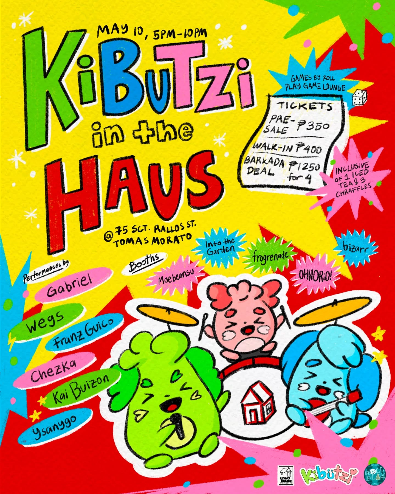

RausHaus
is a Manila-based media collective comprised of young, passionate, and hardworking artists, photographers, and creatives.
It started as a sort of joke when friends back in high school would consistently rehearse in my bedroom (Rau's House).


My highschool friends and I DIYing a recorded session.


The raushaus studio.
Studio Space
When the pandemic hit and everyone was stuck at home, I started to learn how to produce and record music from my bedroom. What started as a joke eventually became a real studio as I found myself increasingly invested in recording and making music.
Now, RausHaus is an actual recording, mixing, and mastering studio that produces music from demos into actual ready-to-release works.
Flagship Projects

The Haus 1 year anniversary.
The Haus is the DJ event arm by Juan Aruego (WEGS) and Gabe Ocampo (GABRIEL). It's partnered with multiple local bars.

Live at RausHaus recording session.
Live at RausHaus is our live session format, giving more emphasis on local artists and their original music.
Events
make a core part of RausHaus in championing local Filipino music and giving avenues for our friends hoping to break into the industry through gigs and event launches.

Kibutzi in the Haus

Lucy Dee EP Launch

Lagooon Single Launch

Franz Guico Album Launch
The Ateneo Musicians' Pool is the premier musical organization of Ateneo.
I entered in 2020 as a Sound Engineering and Bands member. In this first year, I familiarized myself with the organization and helped as a project member in the yearly Reflection on Music and Sound seminar.
In my second year, the officers in the organization appointed me as the Sound Engineering Head as they saw leadership potential in me. In that year, I facilitated the application, skills training, and project deployment for sound engineers.
Alongside my fellow officers in Artist Management, I developed the AMazing initiative, where members formed teams to submit a recorded genre-swapped cover song. I utilized my skills in live-streaming, graphic design, and event production to help make this online event possible.
In my third year, I decided to climb the ladder of officership and run as the Artist Management Head.
In this role, I further expanded my abilities in leadership through designing and implementing the application process for over 250 applicants, of which I oversaw the development and deployment of over 170 accepted members.
Lastly, I leveraged my network and coordinated partnerships with outside events and organizations, culminating in my flagship initative of the TONEEJAY x Jess & Pat's Songwriting workshop and concert.
In my final year, I ran for the role of Vice President for Administration.
Here, I leveraged my technical background in coding and productivity to develop and oversee the application process of over 600 applicants. I also directed administrative operations and streamlined processes across departments by managing and improving organizational databases, digital workspaces, and document systems.
Lastly, I led officer transition and turnover as well as migrating our entire organizational database in line with the school's transition from the Google Workspace to Microsoft 365.
Kroma Entertainment was a local media and entertainment company backed by Globe Telecom.
In my one-month internship, I learned the fundamentals of market research and presentation for strategy, as well as shadowed the project management team.
During my time, I created process mapping diagrams for intra-business units and created market research strategy analysis presentations for 3 Kroma sub-units.
I have done Volunteer Work both under the Ateneo Senior High School Fair and independent student-led organizations.
KinaBOOKasan Literacy Program is a community literacy project that focuses on helping public school students.
I was contacted to help with setting up and live-streaming the Call of Duty: Mobile portion of the benefit gaming tournament.
Kailanga est. 2020 is a fundraising project to help Filipino sectors affected by the pandemic in partnership with Covid-Afflicted Relief Efforts (C.A.R.E.)
I set up and live-streamed the KlimAksyon Environmental Awareness Webinar as well as trained a small team in livestreaming for future events.
In my stay at Ateneo, I played a major part in the two Ateneo Senior High School Fairs as a core member of their Special Events committee.
In Pr1mero, I helped organize the first Ateneo Senior High School Fair benefit concert by negotiating and securing the budget and agreements for artist bookings. This resulted in over two thousand attendees at the benefit concert.
In Paralaya, I continued my efforts by leading a team in contacting and negotiating agreements with artists, resulting in over three thousand attendees at the benefit concert.